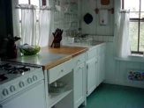
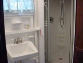
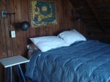
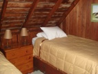

Facilities

Kitchen
The kitchen contains a new Italian gas range with a convection oven and broiler; refrigerator;
sink with pull-out spray faucet; and an overhead fan with light.
There are two counter units, with pull-out garbage can, pull-out recycling bins, drawers, and shelves. One unit has built-in 24”x24” cutting board.
Appliances include toaster, food processor/blender, hand mixer.
Coffee makers: Electric drip; Melitta filter holder and filters; espresso maker; coffee bean grinder.
Kitchen items: lobster pot; pots and pans in multiple sizes; frying pans of cast iron and coated aluminum,
each in multiple sizes; cast iron stove-top
griddle; electric kettle; tea infuser.

Cutlery (knives, spoons, forks); lobster crackers; corn holders; knife holder with knives in multiple sizes; knife sharpener;
garlic press, peelers, can opener, bottle openers, cork screws, measuring cups and spoons, ice cream scoop, oyster shuckers, clam knives,
corn holders, box grater, splatter guard, tongs, whisks, various wooden utensils; spatulas, rubber spatulas, funnel, potato masher,
colanders and strainer, cutting boards, pot insert for steaming; barbecue and grilling utensils.
Mixing and serving bowls, wooden salad bowls, small wooden salad bowls for serving, salad spinner; soup bowls.
Set of plates (3 sizes), pasta bowls, cereal bowls; ten coffee mugs.
Butter dish, sugar bowl, bread baskets, trays.
Bathroom
The bathroom includes
a fiberglass corner shower unit and an on-demand water heater, as well as
ample shelving, towel bars, and hooks. Renters supply their own towels.

What to Bring
The cottage is well-equipped with kitchen supplies. Renters supply their own towels and bed linens (one full size bed, two twins), beach blankets and beach towels. Two beach chairs and a beach umbrella are provided.
If desired, bed linens and towels can be rented from Furies on Route 6 in Wellfleet. (508) 349-1141. Delivery is available.
Mail
Mail can be sent c/o General Delivery, Truro, Ma 02666 and picked up at the Truro Post Office. You should let them know that you will be receiving mail.
Phone
In this age of cell phones, we do not provide a phone in the cottage.
Pets
No dogs are allowed on Corn Hill or the Corn Hill Cottages beach, and renters are not allowed to bring pets of any kind. The owner is fined $100/day if pets are brought to a cottage; this cost is passed on to the renter. There are several excellent kennels located on the Cape.
Bicycle/kayak/boat rentals
There are several places to rent bikes, kayaks, and sailboats in nearby Provincetown and Wellfleet. Flyers for various rental facilities are available in the cottage and in most stores and restaurants.
Living and Dining Rooms
The living room includes a futon couch that opens to a double bed.
A ceiling fan keeps the room cool on hot summer days.
The dining room has a large table that can seat 8-9 people.
Internet/TV/games
The cottage is equipped with high speed wireless internet. There is no TV.
The cottage contains several shelves full of great beach reading, as well as guides and books about Truro and the Cape.
Several game boards, including chess, parchesi, chinese checkers, backgammon, and others are available in the cottage.
Bedrooms
The front bedroom overlooks the bay. It has a double bed and a futon sofa with a trundle that can sleep 1-2 additional people.
Adjustable reading lamps are on each side of the double bed. Two dressers and six deep drawers under the bed provide ample room for clothing and extra blankets.
The front bedroom has a ceiling fan for hot summer nights.

The back bedroom has two twin beds with a bedside lamp for each. There is one large and one small dresser and deep drawers under each bed for storage. A portable fan is provided for hot summer nights.

Mattress covers, pillows, blankets, comforters, and bedspreads are provided. Each bedroom has a portable heater for cool fall nights.
There is a larger fixed gas heater in the living room. Renters supply their own sheets and pillowcases.
Beach Access
The private beach is just a few steps away via the stairs.
As a renter in Truro, you may also purchase a beach sticker for Truro town beaches.
Parking at the National Seashore beaches can be paid on a per day basis.